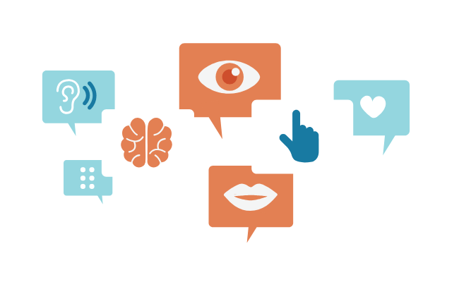

Code and Power Conference Event
What to Expect

- Weekly meetings
- All team members need to introduce to the whole team what they have done in their assigned section in the past week so that team members will feel responsibility for doing their work, be prepared, and then introduce progress to the team.
- Celebration Events & Rewards
- When the project has met certain progress (e.g. magnitude of promotion; num of people visited, etc.), the whole team will go for a little celebration, or each team members receive certain amount of rewards (e.g. a gift card, a prize, etc.).
- Collaborations
- When any of the team members meet difficulties that is hard to solve by himself, a meeting will be arranged and all other group members will come and help solve this difficulties together.
Our Mission
As a conference, we want to raise awareness about the educational surveillance and fundamentally flawed algorithms that are being used today. We will try our best to make the conference as interactive and fun as possible. We will also try to make the conference as educational as possible. Find out more about our detailed schedule on the Schedule page.
Our Values
Respect
Listen to each team members and respect their time and efforts into the team.
Understanding
Being understanding of each member as we are in a pandemic and try to accommodate accordingly.
Responsive
Timely communication to help each team member understand where each one are at in terms of progress.
Accessibility
- Recordings of the conference will be readily available.
- Proper Zoom links that are easily accessible.
- Accessibility to all resources like in-person session have will be available.